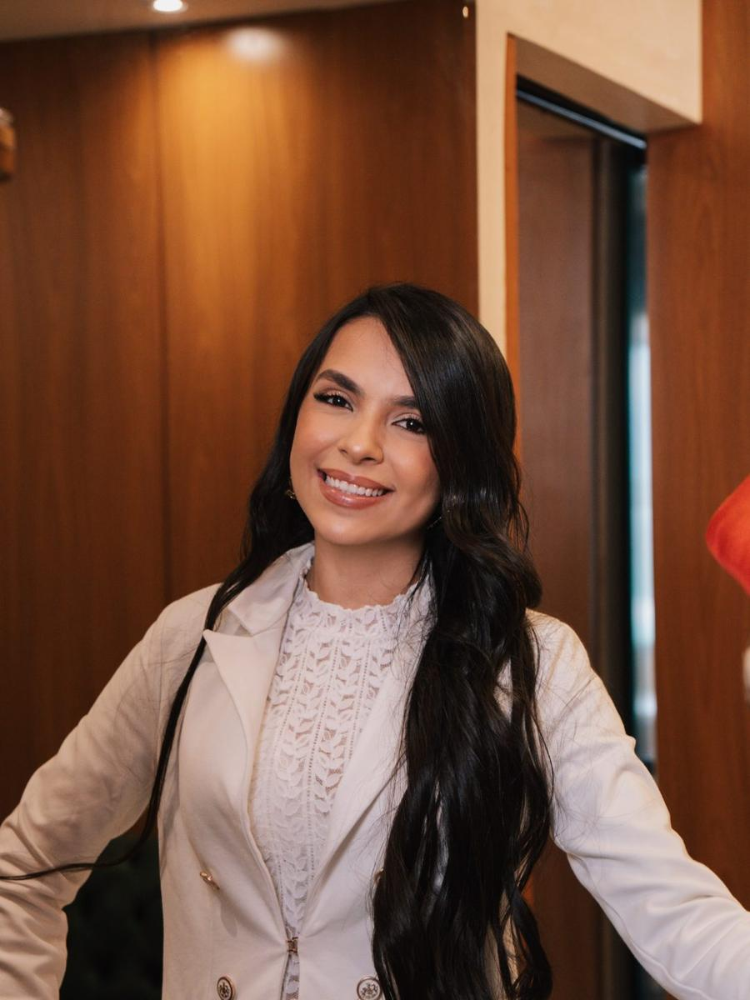
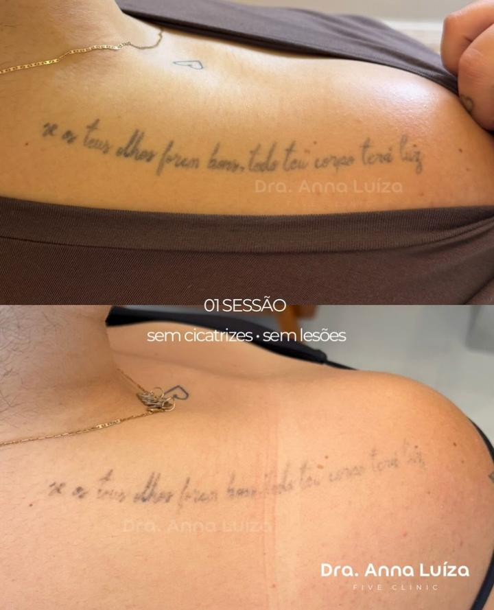
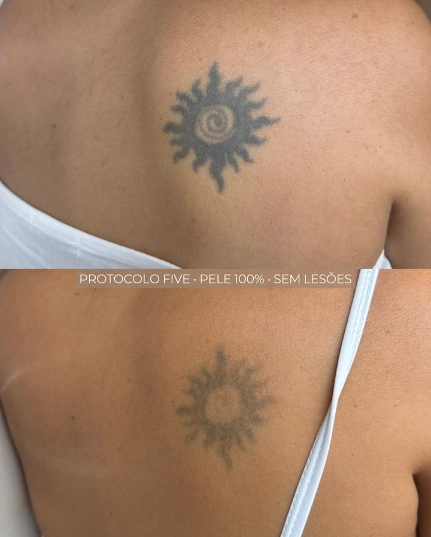
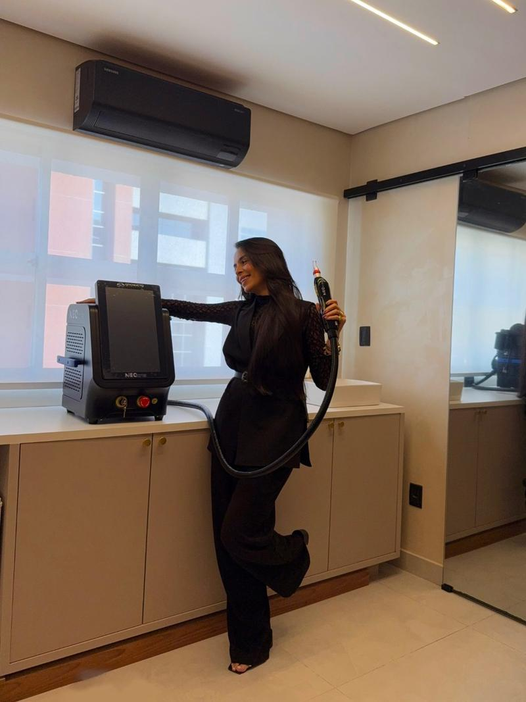
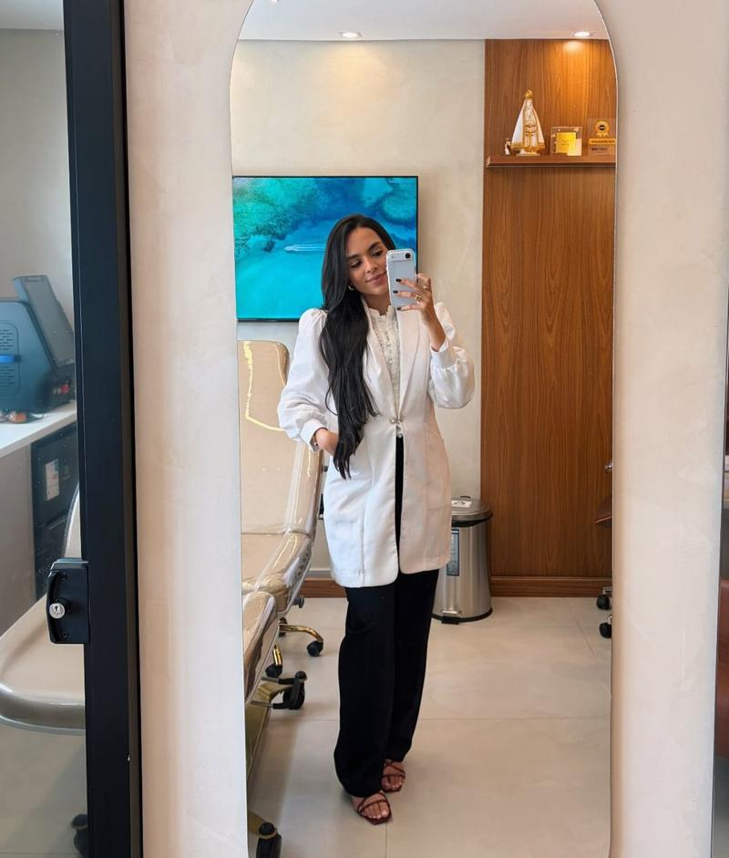
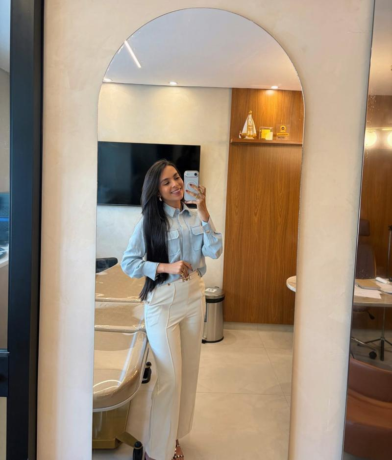
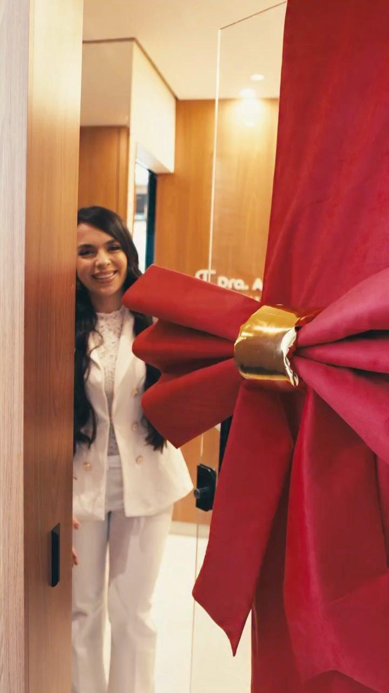

Pretas, coloridas e até pigmentos vermelhos e alaranjados, que exigem conhecimento avançado. Sem manchas, bolhas ou cicatrizes quando feita por profissional capacitada.
Falar sobre minha tatuagem →
Remoção de tatuagem a laser · Governador Valadares
Diga sim com a pele que você escolheu levar ao altar.
Removemos ou clareamos tatuagens e micropigmentações com laser padrão-ouro e o Protocolo Five, criado para preservar a saúde da sua pele em cada sessão. Planeje com antecedência e chegue ao grande dia leve, livre e linda nas fotos.
Sem cicatrizes, sem lesões
Dra. pós-graduada em Laser
Plano individual para a sua data

Fivelaser
padrão-ouro
padrão-ouro

1 sessãoTatuagem no ombro, sem cicatrizes e sem lesões
Laser padrão-ouroTecnologia de ponta, recém-chegada à clínica
Pele 100% saudávelSem manchas, bolhas ou cicatrizes
Zero pelos brancosNa remoção de sobrancelha micropigmentada
Pós-graduação em LaserEstudo e congressos constantes

Para noivas
Seu vestido merece mostrar só você.
Decote nas costas, ombros à mostra, mãos em close na troca de alianças. A tatuagem que um dia fez sentido pode não combinar com o look que você sonhou. Com tempo e o protocolo certo, a gente remove ou clareia para que você se sinta à vontade em cada foto.
Costas e nucaPara vestidos com decote profundo e penteados presos.
Colo e ombrosTomara que caia, ombro a ombro e alças finas.
Punho e mãosOs detalhes que aparecem no buquê e nas alianças.
Braços e antebraçoMangas transparentes, rendas e fotos de perfil.
- AgoraAvaliação com a Dra. AnnaAnalisamos cores, profundidade, área e a resposta da sua pele para definir se o caminho é remover ou clarear.
- Entre sessõesTempo para o corpo trabalharO organismo precisa de semanas (não 30 dias) para eliminar os fragmentos de tinta. É nesse intervalo que o resultado acontece.
- Perto do simÚltima sessão com folgaProgramamos a reta final para que a pele esteja íntegra e pronta para a maquiagem e para as fotos.
Quanto tempo falta para o seu sim?
Coloque a data do casamento e veja como podemos planejar o seu tratamento.
12meses até o altar (exemplo)
Tempo ideal para buscar a remoção completa
Com um ano pela frente, dá para seguir o protocolo com calma e respeitar o intervalo que a sua pele precisa entre as sessões. O número exato de sessões é definido na avaliação.
Enviar minha data no WhatsApp
Antes e depois
Resultados reais de pacientes da Five
Toque em uma foto para ampliar. Cada tatuagem é única: a quantidade de tinta, as cores e a região do corpo mudam o número de sessões.
Imagens com divulgação autorizada pelas pacientes. Resultados individuais, com finalidade educativa.
Protocolo Five
Remover é tão importante quanto preservar a saúde da sua pele.
O Tratamento Five une estudo de química, anatomia, fisiologia e citologia a um laser de alta tecnologia. O objetivo é quebrar o pigmento com eficiência e respeitar a integridade da pele e dos pelos em todas as etapas.
1AvaliaçãoLeitura da tatuagem: cores, camadas, profundidade e região do corpo.
2Plano individualRemoção completa ou clareamento para cobertura, com cronograma pensado para a sua data.
3Sessão a laserO laser fragmenta a tinta. O branqueamento que aparece na hora (efeito frosting) é passageiro.
4Intervalo e cuidadoSeu organismo elimina os fragmentos com tempo. Paciência e constância trazem o resultado bonito.

“Resultados bonitos não vêm da pressa. Vêm da constância, do cuidado e, principalmente, da paciência.”
Dra. Anna Luíza Cardoso
Tratamentos
Tudo o que você quer deixar para trás, e o que quer realçar
Sobrancelhas pesadas, escurecidas ou refeitas várias vezes. O Protocolo Five remove sem pelos brancos, sem quebra e sem queda, e revela de novo os seus fios naturais.
Avaliar minha sobrancelha →Preenchimento labial e botox planejados para cada rosto, sem excessos. Um cuidado a mais para chegar ao casamento com a sua beleza natural realçada.
Conhecer a harmonização →
Quem cuida de você
Dra. Anna Luíza CardosoEspecialista em remoção a laser
Remover pigmento envolve célula, tecido, química, física, resposta inflamatória e o comportamento de cada tinta. Por isso a Dra. Anna estuda sem parar e leva a Governador Valadares o que há de mais avançado em conhecimento e tecnologia na remoção a laser.
- Pós-graduada em Aplicação de Laser na Saúde e na Estética
- Presença constante em congressos nacionais da área
- Criadora do Protocolo Five de remoção saudável
- Formação em Harmonização Facial
A nova clínica
Um espaço pensado em cada detalhe para receber você
“Cada detalhe dessa clínica carrega um pedacinho de mim.” Madeira, luz suave e privacidade para você viver o tratamento com tranquilidade.


Dúvidas frequentes
O que as noivas mais perguntam
Não encontrou a sua dúvida? Mande uma mensagem e a Dra. Anna responde.
Com quanto tempo de antecedência devo começar?
Quanto antes, melhor. O intervalo entre as sessões respeita o tempo que o seu organismo leva para eliminar a tinta, então tatuagens maiores ou com mais cor pedem um cronograma mais longo. Na avaliação a Dra. monta o plano de acordo com a data do seu casamento.
A remoção deixa cicatriz ou mancha?
Não. Lesões não fazem parte do processo de remoção. Quando realizado por profissional capacitado, o tratamento não causa manchas, bolhas ou cicatrizes. Segurança é prioridade no Protocolo Five.
Quantas sessões vou precisar?
Depende da quantidade de tinta depositada, das cores usadas, da profundidade e da região do corpo. Nos resultados acima há casos com 1, 3, 4 e 5 sessões. O número para o seu caso é definido na avaliação.
Não dá tempo de remover tudo. E agora?
O clareamento também é uma opção. Algumas sessões já podem suavizar bastante o desenho, e o laser também prepara a pele para quem quer fazer uma nova tatuagem por cima, com mais nitidez.
Tatuagens coloridas ou vermelhas saem?
Pigmentos vermelhos e alaranjados estão entre os maiores desafios da remoção a laser, porque têm compostos químicos muito estáveis. Exigem conhecimento avançado, e a Five trata esses casos com frequência.
Por que a pele fica branquinha logo após a sessão?
É o efeito frosting, uma reação instantânea e passageira ao laser. Ele some em pouco tempo e indica que o pigmento foi atingido.
Remover a sobrancelha deixa os pelos brancos?
Não com o Protocolo Five. Ele foi desenvolvido para remover a micropigmentação sem causar pelos brancos, quebra ou queda dos fios.
Comece a contagem regressiva
O seu sim começa com uma avaliação.
Agende pelo WhatsApp e conte a data do seu casamento. A Dra. Anna avalia a sua tatuagem e monta um plano feito para você.
Agendar minha avaliação
(33) 98463-2079
Rua Benjamin Constant, Centro · Governador Valadares – MG · CEP 35010-060
@five_clinic